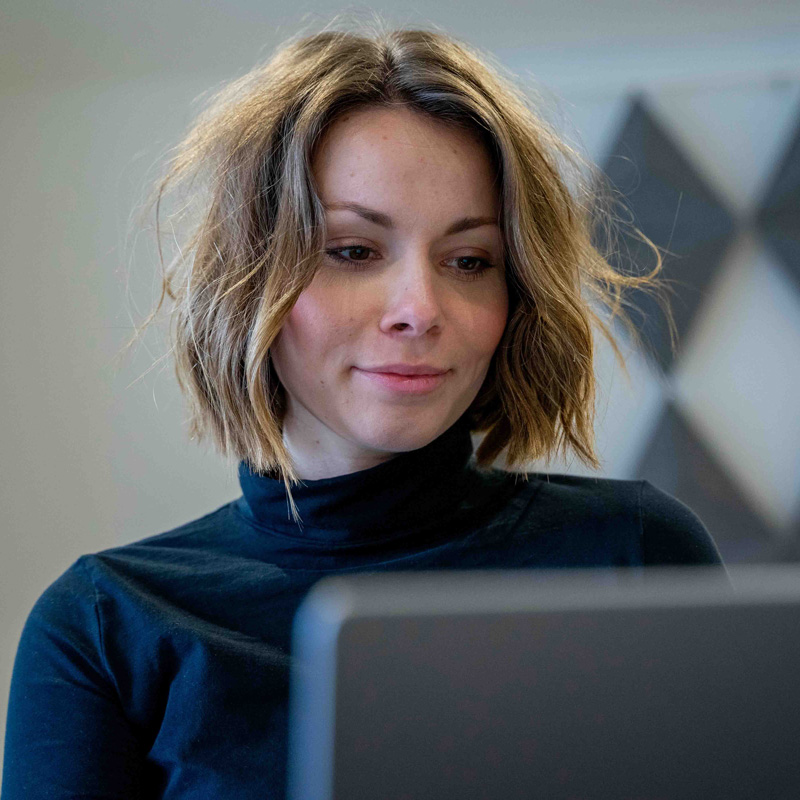

Udvalgte projekter
Jeg kan jo ret mange ting i virkeligheden - lidt lige som dig. Men det du kan se og læse om her, er et udpluk af mit arbejde fra min tid på uddannelsen Multimediedesign. Jeg har også skrevet lidt om, hvad jeg selv mener, jeg er god til. Men da jeg bedst kan lide at være så ærlig som muligt, så kan du også lære lidt mere om, hvad jeg er mindre god til. Samtidig er du så heldig, at jeg også har en masse beviser i form af billeder og videoer. Så kan du jo også selv være dommer for en stund. Hvis du vil se endnu mere af mit arbejde eller bare er klar på en snak, så klik endelig bare her. Så kommer du nemlig direkte til kontaktsiden.
Idéudvikling og mock-ups
Uden at lyde som en kæmpe stor blærerøv (må man stadig sige det?), så ligger min ekspertise i at omsætte drømme og idéer til håndgribelige koncepter og prototyper. Jeg arbejder med at udvikle dine tanker til konkrete mock-ups, der viser, hvordan det endelige produkt eller historie kan tage form. Ved at kombinere kreativ tænkning med praktisk design, hjælper jeg med at bringe dine idéer til live.
Her kan du f.eks. se "Grøn Smag", en bæredygtig madplan. som jeg har idéudviklet og efterfølgende lavet som mock-up af en app i programmet Adobe XD. Hvis du vil se den fulde prototype, kan du klikke her.
Portrætbilleder
Leder du efter en habil fotograf til dine portrætbilleder? Jeg tilbyder fotografering af individuelle portrætter og professionelle profilbilleder. Er det min spidskompetence? Nej, det er det nok ikke. Men jeg er bedre end den gængse dansker, hvilket betyder, at du enten kan hyre mig til en fordelagtig pris, eller at du kan få nogle flotte billeder med i pakken som en del af vores samarbejde.
De billeder du kan se her, er et jeg selv har taget på en kold vinterdag.
Vil du se flere af denne type billeder? Så husk du stadig bare skal trykke her, for at kontakte mig.
Videoproduktion
Hvis du har brug for at få produceret en video, er du kommet til det rette sted. I videoproduktionen kan jeg håndtere hele processen fra storyboard til den sidste eksport. Uanset om det er en reklame, en brandvideo eller en eventdækning, så kan jeg tilbyde kreativitet og teknisk ekspertise der sikrer, at dit budskab bliver leveret på en effektiv og engagerende måde.
Den video du ser her, er en simpel video om at blande saftevand. Den er mest produceret for at illustrere at intet er for småt til en lille historie. Hvis du vil se en mere seriøs video, som jeg selv har klippet, så går du bare på forsiden igen. Det er den der ligger lige der.
Produktbilleder
Med en omhyggelig tilgang til detaljer og komposition leverer jeg produktbilleder til alt fra online butikker til markedsføringsmateriale. Billederne kan tages både som packshots med ensartet baggrund eller som lifestyle-billeder, der placerer dine produkter i forskellige settings. Er det her jeg shiner? Det er det nok heller ikke helt endnu, men jeg øver mig og vil hjertens gerne øve mig endnu mere.
Her kan du se nogle af de billeder jeg selv har taget og efterfølgende også redigeret.
After Effects
Har du brug for lidt ekstra 'wow' i dine videoer? Det er her, jeg kommer ind med mine After Effects skills. Jeg kan peppe dine videoer op med nogle simple animationer eller visuelle effekter. Ikke noget over the top, bare lige det, der skal til for at give dine videoer et lille ekstra pift.
Du kan f.eks. se en lille video om en citron her. Den er lavet fordi jeg skulle lave en kort video, der netop skulle omhandle denne citron. Det er simpelt, og nok ikke det vildeste du har set, men jeg synes selv, at det er blevet en fin lille historie.
Copywriting
Kan du nu også 'skrive, så fuglene synger'? Nej, hvis jeg nu skal være helt ærlig. Jeg skriver ikke for at imponere nogen fugle, men for at kommunikere klart og effektivt til netop din målgruppe. Det vigtigste for mig er at skabe tekster, der er let forståelige og engagerende, og som rammer lige der, hvor din målgruppe føler sig forstået og set.
Beviset kan ses på hele denne hjemmeside. Ja, den har jeg selv skrevet. Derudover kan du se et par udsnit af min skrivestil her.